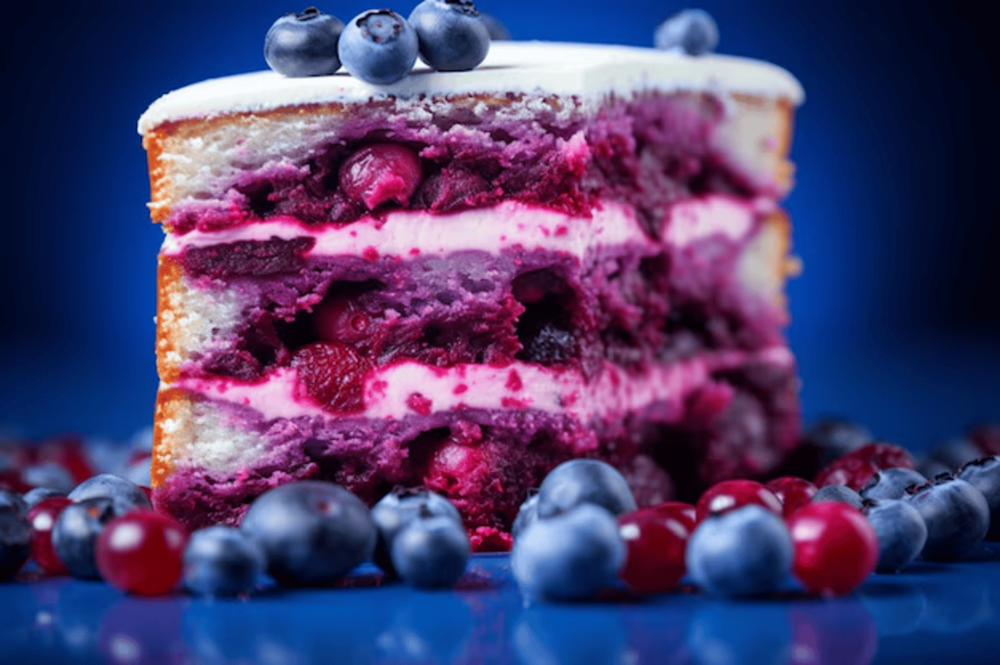

Blueberry Cream cake


Ingredients
- ½ cup butter
- ¾ cup white sugar, divided
- ¼ teaspoon salt
- 1 teaspoon vanilla extract
- 2 egg yolks
- 1 ½ cups all-purpose flour
- 1 teaspoon baking powder
- ⅓ cup milk
- 1 ½ cups fresh blueberries
- 1 tablespoon all-purpose flour
- 2 egg whites
- 1 tablespoon white sugar
Preparation Instructions
- Gather all ingredients and preheat the oven to 350 degrees F (175 degrees C). Grease and flour an 8-inch pan.
- Beat butter and 1/2 cup sugar together in a large bowl with an electric mixer until soft and fluffy; mix in vanilla and salt. Add egg yolks and beat until creamy.
- Combine 1 1/2 cups flour and baking powder in a bowl; add alternately with milk to creamed mixture..
- Toss blueberries with 1 tablespoon flour in a small bowl. Add to the batter and fold in gently..
- Beat egg whites in a separate bowl until soft peaks form. Add remaining 1/4 cup of sugar, 1 tablespoon at a time, and beat until stiff peaks form. Fold egg whites into cake batter.
- Pour batter into the prepared pan. Sprinkle remaining 1 tablespoon sugar over top.
- Bake in the preheated oven until a toothpick inserted in center comes out clean, about 50 minutes.